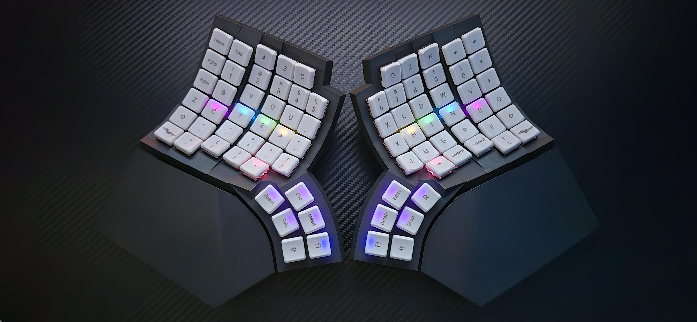
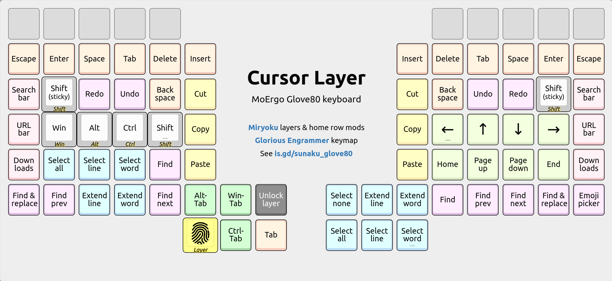
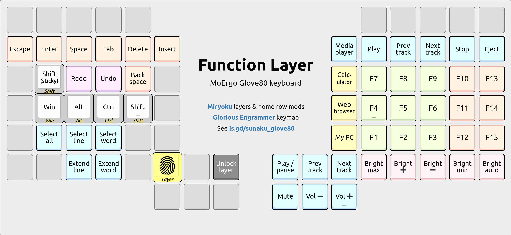
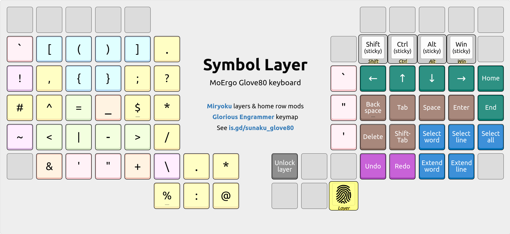
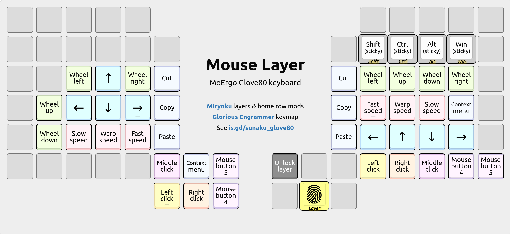
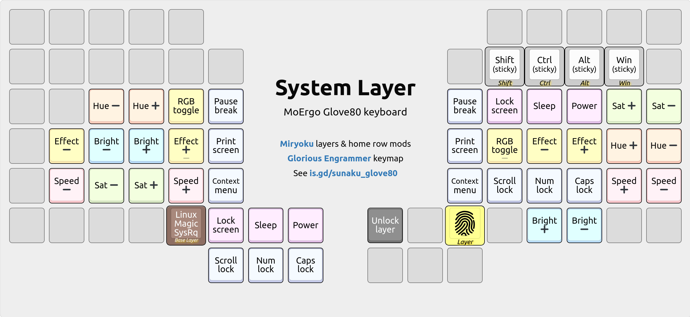

MoErgo Glove80 programmable ergonomic keyboard
NOTE: Check out the interactive map of this keyboard’s layers below!
Is that… Batman’s keyboard?! ü¶á No, but it sure makes me feel like him: sitting in the turquoise glow of the Batcomputer, deep within the quiet solitude of the Batcave, saving the world with this ergonomic marvel!
This is my MoErgo Glove80 keyboard: a split, columnar, contoured, and wireless ergonomic marvel that has become my “endgame” choice for the foreseeable future. Previously, I used an Ergohaven Remnant keyboard for 6 months, a Dactyl Manuform 5x6 keyboard for a year, an ErgoDox EZ keyboard for 6 years, and a Kinesis Advantage keyboard for 11 years prior — all on the quest for better ergonomics.
Review
Embodying a thoughtful, humanistic design that is forgiving (accommodating a broad range of hand sizes and shapes), inviting (like a lounge chair whose intuitive shape beckons weary hands to perch down for some well deserved rest), and futuristic (like some advanced Space Age technology that Batman would use), the Glove80 provides a comfortable, efficient, and delightful typing experience.
For me, the Glove80 is like a dream come true because it brings together the best features of all the keyboards I’ve used so far on my quest for ergonomics:
| Ergonomic keyboard | Duration of use | Split design? | Contoured keywells? | Columnar layout? | Programmable firmware? | Low height? | Wireless capable? |
|---|---|---|---|---|---|---|---|
| MoErgo Glove80 üèÜ | 1 month | ✅ | ✅ | ✅ | ✅ | ✅ | ✅ |
| Ergohaven Remnant | 6 months | ✅ | ✅ | ✅ | ✅ | ✅ | ❌ |
| Dactyl Manuform 5x6 | 1 year | ✅ | ✅ | ✅ | ✅ | ❌ | ❌ |
| ZSA ErgoDox EZ | 6 years | ✅ | ❌ | ✅ | ✅ | ✅ | ❌ |
| Kinesis Advantage | 11 years | üåî | ✅ | ✅ | üåí | ❌ | ❌ |
| Goldtouch Adjustable | 1 year | üåì | ❌ | ❌ | ❌ | ✅ | ❌ |
| Microsoft Natural Elite | 2 years | üåí | ❌ | ❌ | ❌ | ✅ | ❌ |
I especially revered the Kinesis Advantage for its unconventional yet ingenious design, but I often wished it were split so that I could separate the keywells at shoulder width apart for a more relaxed, natural stance. Thus I embarked on a split keyboard journey, sacrificing keywells in favor of a split design. üíî Fortunately, my original wish has now been granted: the Glove80 delivers it all!
Impression
My first impressions of this keyboard, after connecting it to my computer, were:
Everything feels very reachable, like fitting into a pair of gloves! In particular, the top-row pinky key (Q on QWERTY) is the best I’ve ever felt.
Excellent thumb cluster: the lower arc follows my thumb’s natural motion perfectly, and the nearest upper arc key is also reachable without effort.
The keycaps’ POM material is delightfully smooth and slippery, making it easy (and fun) to slide fingers across. It’s kind of like having wheels on ergonomic office chairs: you can move around your desk while you multitask.
Key travel is shorter than the Cherry MX switches I’m accustomed to, which is great because I can feel less effort is needed to fully press each key.
The positioning of the function keys (which are offset by one key above the number row) makes sense now: the missing F6 cut-out on the left half is out of reach unless I shift my palm off its comfortable perch on the palm rest.
The keyboard is very light, making it easy to lift and reposition to suit the task and posture (whether I’m sitting or standing at my desk) at hand.
Adaptation
On my first day using the Glove80, coming from an Ergohaven Remnant keyboard, I felt right at home: achieving 100 WPM on MonkeyType, as shown below. And this speed is with home row mods, disambiguated by ZMK’s global-quick-tap feature! üöÄ
Key travel is definitely less pronounced on the Glove80’s special-order Choc v1 Red key switches, which allows for a more rapid inter-key typing speed, and the tighter key spacing afforded by Choc switches (compared to MX switches) along with the Glove80’s ergonomic curvature are helping to minimize finger travel around the keyboard. With more practice (just normal usage over time), I feel confident that I can increase my touch-typing speed even further on the Glove80.
Porting my QMK keymap from the Remnant over to ZMK on the Glove80 was challenging, mainly because my home row mods disambiguation logic is so complex. Notably, I worried whether I would be able to translate all the nuances of my QMK patch (which took over 6 months of occasional development to master) to ZMK, but thankfully it was significantly simpler than what I had imagined: without modifying ZMK source code or writing C extensions, I was able to port nearly all of that monstrous sophistication using declarative snippets of custom behaviors!
Comparison

In terms of quality, the Glove80 is strong yet light: hallmarks of high-end polycarbonate material, which is also used to make optical lenses in eyeglasses. This stands opposite to the Remnant’s light yet fragile 3D-printed construction, which requires careful handling since it can be damaged easily, say, if dropped.
In terms of height, the Glove80 achieves a lower height profile due to its center of gravity (its keywell nearly touches the desk!) in combination with low-profile Choc switches and keycaps. Even at its tallest point, the Glove80 still stands below the height of the Remnant’s top-inner corner key (number 5).

üëÜ Outer profile: looking from the left side toward the center.
üëÜ Inner profile: looking from the center toward the left side.

üëÜ Front profile: looking from the palm rest toward the back.

üëÜ Back profile: looking from the back toward the palm rest.
In terms of weight, the Glove80 feels much lighter than the Remnant even though it weighs negligibly more: using a kitchen scale, I observed that the right half of the Glove80 (with palm rest) weighed 9.7oz / 275g whereas the Remnant’s (without palm rest) weighed 9.6oz / 272g. However, the Glove80’s weight is more evenly distributed over its surface so it doesn’t feel as heavy when you lift it up; whereas the Remnant’s shape is more condensed, bulkier, and harder to grasp.
In terms of mobility, the Glove80’s two halves always communicate wirelessly whereas the left half can be wired, wireless, or both (since it supports connecting to 6 devices simultaneously: 5 Bluetooth devices and 1 USB device). This allows both halves, especially the right half, to be repositioned at will. For instance, I sometimes need more writing space on my desk to take notes or doodle, so I simply lift the right half up & away to make room for my notebook. And when I’m finished, I simply move the right half back into position: setting it down wherever I find is comfortable for me, approximately at shoulder width. This is in stark contrast to the Remnant, which is always and only wired to USB. As a result, I’m hesitant to reposition the Remnant’s two halves freely because that may disturb their perfect symmetry, which is tedious to restore accurately.
In terms of compatibility, the Glove80 works flawlessly with wireless Bluetooth devices, like smartphones, as well as wired USB devices, like laptops. The former is especially remarkable: I connected my Glove80 to my smartphone as an experiment to type in a passphrase (why struggle with a virtual on-screen keyboard when you’ve got the real thing Bluetooth-enabled?) and I was amazed! ü§© This has unlocked a massive productivity boost for the otherwise inefficient smartphone user interface. It’s quite the game changer: Glove80 for the win! ‚ù§Ô∏è‚Äçüî•
In terms of firmware, the Glove80’s online layout editor makes it easy to customize the keymap and share it with others: there is a free-form text box for notes alongside a “Custom Defined Behaviors” box for ZMK configuration snippets, which lets you implement advanced features such as home row mods disambiguation. And once you’ve built and downloaded your keymap from the online layout editor, flashing the resulting *.uf2 file is a simple drag & drop operation after entering bootloader mode, which has a robust hardware fail-safe of holding particular keys while powering on the keyboard, as documented in the user guide.
In terms of documentation, the Glove80 comes with a comprehensive user guide that covers everything from ergonomics to soldering; gentle introductory emails when your order is being prepared for shipment; and a helpful Discord community so thoughtful and engaging that I look forward to participating in it every day.
In terms of support, the Glove80’s inventors are active participants in the Discord community, and they’re reachable directly by email and other means too; their professional demeanor and responsiveness is often applauded by customers. This is significantly better than the Remnant’s support, where language and cultural differences sometimes complicate communication and problem resolution.
Overall, the Glove80 is a phenomenal upgrade over the Remnant and all other ergonomic keyboards I’ve used before. It’s like a dream come true: I love it! üëå
Layers
The keyboard boots up into the following default “base” layer when powered on. When held, the purple keys in the thumb clusters activate the subsequent layers according to the legendary Miryoku’s 6-layer design with 3-key thumb activation.
Interactive: Hover your mouse over the purple keys to see each layer!

The keys are arranged in my variation of Arno Klein’s Engram 2.0 layout and they’re imbued with the legendary Miryoku home row mods tamed with enhancements.
Going beyond Miryoku, I have added a custom layer locking feature whereby a Miryoku layer can be set to remain active even after you release its thumb key: while holding the Lower key, simply tap your desired Miryoku layer’s thumb key. To unlock the layer, tap the Lower key again on the same hand as its thumb key.
Cursor layer
Arrow keys
The up/down arrow keys on the right-hand home row diverge from Vim’s HJKL order because it feels more natural to follow the inward-rising curve of the keyboard’s contoured keywell, which elevates the thumb above the pinky finger and, similarly, the middle finger (up arrow) above the ring finger (down arrow).
This is a longstanding preference that I formed 17 years ago, in my early days of using the Kinesis Advantage with the Dvorak layout, whose lack of HJKL provided the freedom to reimagine the arrangement of arrow keys on the home row.
Select & edit
Editing (index finger) and selection (thumb cluster) keys line the inner wall. This opposition allows for pinching, where selections can be followed by edits. For example, to copy everything, I would first tap the “Select all” key with my thumb and then pinch slightly inward to tap the “Copy” key with my index finger.
The copy and paste keys are stacked vertically, in that order, to allow the index finger to rake down upon them in a natural curling motion toward the palm. This order is also logical, since pasting requires something to be copied first.
The select & extend word/line keys on the thumb cluster are ZMK macros that approximate Pascal Getreuer’s word selection QMK macro, which automates common selection tasks that require holding down Control and Shift with the arrow keys:

In some apps, the select word key cycles to the next successive word each time!
Number layer

A 3x3 numeric keypad (using the standard 10-key layout) occupies the home block. The period and comma keys are positioned near the zero key on the thumb cluster. Square brackets from the base layer are replaced with parentheses for grouping.
Date & time
The slash and minus keys are positioned for MM/DD and YYYY-MM-DD date entry. Similarly, the colon key is positioned above them for HH:MM:SS time stamp entry.
:time stamp separator-ISO-8601 date separator/American date separator
Arithmetic
Common arithmetic operators pair along the sides of the 3x3 numeric keypad.
%and:for percentages and proportions+and-for addition and subtraction*and/for multiplication and division
Prefix signs
Signs that commonly prefix numbers line the top of the 3x3 numeric keypad.
~approximately#literal number$dollar amount@at the rate of
Inequalities
Comparison operators are positioned along the perimeter of the home block.
<less than>greater than=equal to~approximately
Function layer
The function keys are arranged in the same 10-key layout as the Number layer’s 3x3 numeric keypad so that you can develop common muscle memory for both layers. The remaining F10-F12 keys wrap around the home block because they’re found in shortcuts such as BIOS save/quit, fullscreen toggle, and devtools, respectively.
Symbol layer
This is the crown jewel of my keyboard’s configuration: an entire layer dedicated to the entry of symbols that are essential for computer programming. It’s the result of several hundreds of layout iterations over the last 8+ years.
üëâ Red quotes. Green arrows. Blue groups. Purple flips. Yellow Vim.
\is on the thumb for escaping all other symbols without moving your hand.- For snake_case,
_is at the same spot as English’s most frequent lettere. - For assignment,
=is on the home row because it’s frequent in programming. - For strings, common quotation marks are found at the top of the home block.
- Bitwise
|&and arithmetic-+operators “flap down” and “fold up” together. - Angling arrows
->,=>,<=,<-; functional programming pipes|>,<|abound!
Base layer affinity
!is on the same key asShifton the base layer: they both invert things.();sits just above the inward-rolling “you” sequence in the Engram layout.
Vim editor shortcuts
^and$are on the home row, for jumping to the start/end of current line.#and*are on the home row, to search behind/ahead for word under cursor.=is on the home row, to automatically indent current line or selection.{and}are on the home block, for jumping to previous/next paragraph.<and>are on the home block, for decreasing/increasing indentation.,and;are in proper order for previous/next repetition off/F/t/Tjumps.?and/are stacked vertically, to search behind/ahead for regex pattern.%is on the upper thumb key, for jumping to cursor’s matching delimiter.:is on the lower thumb key, for entering Vim’s command mode comfortably.
Adjacent key bigrams
#!for shebang lines in UNIX scripts.->for thin arrows in C, C++, and Elixir.()for parentheses..*for filesystem globs.*.for regular expressions./*and*/for multi-line comments in C, CSS, and JavaScript.
Outer corner bigrams
These are easy to find because they’re on the outer corners of the keyboard.
!~for regular expression “not matching” in Perl, Ruby, and Elixir.~/for home directory paths in UNIX.?!for interrobang in English prose.
Inward rolling bigrams
()for parentheses.<>for angle brackets.[]for square brackets.{}for curly braces.();for zero-arity function calls in C and related languages.);for function call statements in C and related languages..*for regular expressions.~/for home directory paths in UNIX.<-for assignment in R and in Elixir’swithstatements.->for thin arrows in C, C++, and Elixir.=>for fat arrows in Perl, Ruby, and Elixir.!=for “not equal to” value comparison in many languages.<=for “less than or equal to” comparison in many languages.^=for bitwise XOR assignment in C and related languages.|>for the pipe operator in Elixir.!(for negating a group in Boolean expressions."$for quoted variable substitution in Bourne shell.!$for last argument of previous command in Bourne shell.$?for exit status of previous command in Bourne shell.<%for directive tags in Ruby’s ERB and Elixir’s EEx templates.#{for string interpolation in Ruby and Elixir.`'for legacy curly quotes.</for element closing tags in XML and HTML.~>for pessimistic version constraint in SemVer.
Outward rolling bigrams
=~for regular expression matching in Perl, Ruby, and Elixir.-=for negative accumulation in C and related languages.+=for accumulation in C and many languages.%=for modulo assignment in C and related languages.>=for “greater than or equal to” value comparison.>&and&<for file descriptor redirection in Bourne shell.$_for value of last argument of previous command in Bourne shell.%>for directive tags in Ruby’s ERB and Elixir’s EEx templates.${for variable interpolation in Bourne shell.%{for maps (hash tables) in Elixir.
Mouse layer
Movement keys are located centrally in the home block, resembling WASD keys, and mouse acceleration controls are poised for pinky finger access, so you can independently move the mouse pointer and also change its speed at the same time.
Mousewheel down/up keys are also placed on the home block, specifically on
the same keys as J/K (down/up in Vim) on the base layer for muscle memory reuse.
System layer
Keys for controlling RGB matrix settings line the central rows of home block. Keys for power and the traditional print->pause triplet line the thumb cluster.
Firmware
My keyboard’s entire firmware, as described in this article, is available on the Glove80 Layout Editor as a saved keymap, with discussion in this Discord thread. Here is the relevant ZMK configuration snippet saved in the keymap linked above:
//////////////////////////////////////////////////////////////////////
// IMPORTANT: You need to set Firmware Version to "pr16.zephyr-3-2" //
// under Settings > Advanced Settings in the Glove80 Layout Editor! //
//////////////////////////////////////////////////////////////////////
//
// Sunaku's Layout v13 featuring Engram(mer) layout and Miryoku system
//
// https://sunaku.github.io/moergo-glove80-keyboard.html
// https://discord.com/channels/877392805654306816/1111469812850380831
//
behaviors {
//
// Miryoku home row mods and thumb layer keys
// https://sunaku.github.io/home-row-mods.html
//
#define TYPING_STREAK_TERM 160 // global-quick-tap-ms
#define INDEX_TAPPING_TERM 200
#define HOMEY_TAPPING_TERM 240
#define THUMB_TAPPING_TERM 200
//
// Glove80 key positions index for positional hold-tap
// https://discord.com/channels/877392805654306816/937645688244826154/1066713913351221248
// https://media.discordapp.net/attachments/937645688244826154/1066713913133121556/image.png
//
// |------------------------|------------------------|
// | LEFT_HAND_KEYS | RIGHT_HAND_KEYS |
// | | |
// | 0 1 2 3 4 | 5 6 7 8 9 |
// | 10 11 12 13 14 15 | 16 17 18 19 20 21 |
// | 22 23 24 25 26 27 | 28 29 30 31 32 33 |
// | 34 35 36 37 38 39 | 40 41 42 43 44 45 |
// | 46 47 48 49 50 51 | 58 59 60 61 62 63 |
// | 64 65 66 67 68 | 75 76 77 78 79 |
// | 69 52 | 57 74 |
// | 70 53 | 56 73 |
// | 71 54 | 55 72 |
// |------------------------|------------------------|
//
//
#define LEFT_HAND_KEYS \
0 1 2 3 4 \
10 11 12 13 14 15 \
22 23 24 25 26 27 \
34 35 36 37 38 39 \
46 47 48 49 50 51 \
64 65 66 67 68
#define RIGHT_HAND_KEYS \
5 6 7 8 9 \
16 17 18 19 20 21 \
28 29 30 31 32 33 \
40 41 42 43 44 45 \
58 59 60 61 62 63 \
75 76 77 78 79
#define THUMB_KEYS \
69 52 57 74 \
70 53 56 73 \
71 54 55 72
homey_left: miryoku_home_row_mods_left_hand {
compatible = "zmk,behavior-hold-tap";
label = "HOME_ROW_MODS_LEFT_HAND";
flavor = "balanced";
hold-trigger-key-positions = <RIGHT_HAND_KEYS THUMB_KEYS>;
hold-trigger-on-release; // wait for other home row mods
tapping-term-ms = <HOMEY_TAPPING_TERM>;
quick-tap-ms = <TYPING_STREAK_TERM>;
global-quick-tap; // with typing streak
#binding-cells = <2>;
bindings = <&kp>, <&kp>;
};
homey_right: miryoku_home_row_mods_right_hand {
compatible = "zmk,behavior-hold-tap";
label = "HOME_ROW_MODS_RIGHT_HAND";
flavor = "balanced";
hold-trigger-key-positions = <LEFT_HAND_KEYS THUMB_KEYS>;
hold-trigger-on-release; // wait for other home row mods
tapping-term-ms = <HOMEY_TAPPING_TERM>;
quick-tap-ms = <TYPING_STREAK_TERM>;
global-quick-tap; // with typing streak
#binding-cells = <2>;
bindings = <&kp>, <&kp>;
};
index_left: miryoku_home_row_mods_left_index_shift {
compatible = "zmk,behavior-hold-tap";
label = "HOME_ROW_MODS_LEFT_INDEX_SHIFT";
flavor = "balanced";
hold-trigger-key-positions = <RIGHT_HAND_KEYS THUMB_KEYS>;
//hold-trigger-on-release; // don't wait for other mods
tapping-term-ms = <INDEX_TAPPING_TERM>;
quick-tap-ms = <INDEX_TAPPING_TERM>; // enable repeat
//global-quick-tap; // no typing streak
#binding-cells = <2>;
bindings = <&kp>, <&kp>;
};
index_right: miryoku_home_row_mods_right_index_shift {
compatible = "zmk,behavior-hold-tap";
label = "HOME_ROW_MODS_RIGHT_INDEX_SHIFT";
flavor = "balanced";
hold-trigger-key-positions = <LEFT_HAND_KEYS THUMB_KEYS>;
//hold-trigger-on-release; // don't wait for other mods
tapping-term-ms = <INDEX_TAPPING_TERM>;
quick-tap-ms = <INDEX_TAPPING_TERM>; // enable repeat
//global-quick-tap; // no typing streak
#binding-cells = <2>;
bindings = <&kp>, <&kp>;
};
thumb: miryoku_thumb_layer {
compatible = "zmk,behavior-hold-tap";
label = "MIRYOKU_LAYER_TAP_WITH_REPEAT";
flavor = "balanced";
tapping-term-ms = <THUMB_TAPPING_TERM>;
quick-tap-ms = <THUMB_TAPPING_TERM>; // enable repeat
//global-quick-tap; // no typing streak
#binding-cells = <2>;
bindings = <&mo>, <&kp>;
};
// Shift + LEFT_PARENTHESIS = LESS_THAN
parang_left: left_parenthesis_and_less_than {
compatible = "zmk,behavior-mod-morph";
label = "LEFT_PARENTHESIS_AND_LESS_THAN";
#binding-cells = <0>;
bindings = <&kp LEFT_PARENTHESIS>, <&kp LESS_THAN>;
mods = <(MOD_LSFT|MOD_RSFT)>;
};
// Shift + RIGHT_PARENTHESIS = GREATER_THAN
parang_right: right_parenthesis_and_greater_than {
compatible = "zmk,behavior-mod-morph";
label = "RIGHT_PARENTHESIS_AND_GREATER_THAN";
#binding-cells = <0>;
bindings = <&kp RIGHT_PARENTHESIS>, <&kp GREATER_THAN>;
mods = <(MOD_LSFT|MOD_RSFT)>;
};
// Shift + CapsWord = CapsLock
cappy: capsword_and_capslock {
compatible = "zmk,behavior-mod-morph";
label = "CAPSWORD_AND_CAPSLOCK";
#binding-cells = <0>;
bindings = <&caps_word>, <&kp CAPSLOCK>;
mods = <(MOD_LSFT|MOD_RSFT)>;
};
//
// CapsWord - ported from Pascal Getreuer's extension for QMK
// https://zmk.dev/docs/behaviors/caps-word
// https://getreuer.info/posts/keyboards/caps-word/index.html
//
behavior_caps_word {
continue-list = <UNDERSCORE MINUS BACKSPACE DELETE N1 N2 N3 N4 N5 N6 N7 N8 N9 N0>;
};
//
// Custom shifted pairs for the Engram layout
// https://engram.dev/
//
one: engram_one_and_pipe {
compatible = "zmk,behavior-mod-morph";
label = "ENGRAM_ONE_AND_PIPE";
#binding-cells = <0>;
bindings = <&kp N1>, <&kp PIPE>;
mods = <(MOD_LSFT|MOD_RSFT)>;
};
two: engram_two_and_equal {
compatible = "zmk,behavior-mod-morph";
label = "ENGRAM_TWO_AND_EQUAL";
#binding-cells = <0>;
bindings = <&kp N2>, <&kp EQUAL>;
mods = <(MOD_LSFT|MOD_RSFT)>;
};
three: engram_three_and_tilde {
compatible = "zmk,behavior-mod-morph";
label = "ENGRAM_THREE_AND_TILDE";
#binding-cells = <0>;
bindings = <&kp N3>, <&kp TILDE>;
mods = <(MOD_LSFT|MOD_RSFT)>;
};
four: engram_four_and_plus {
compatible = "zmk,behavior-mod-morph";
label = "ENGRAM_FOUR_AND_PLUS";
#binding-cells = <0>;
bindings = <&kp N4>, <&kp PLUS>;
mods = <(MOD_LSFT|MOD_RSFT)>;
};
five: engram_five_and_less_than {
compatible = "zmk,behavior-mod-morph";
label = "ENGRAM_FIVE_AND_LESS_THAN";
#binding-cells = <0>;
bindings = <&kp N5>, <&kp LESS_THAN>;
mods = <(MOD_LSFT|MOD_RSFT)>;
};
six: engram_six_and_greater_than {
compatible = "zmk,behavior-mod-morph";
label = "ENGRAM_SIX_AND_GREATER_THAN";
#binding-cells = <0>;
bindings = <&kp N6>, <&kp GREATER_THAN>;
mods = <(MOD_LSFT|MOD_RSFT)>;
};
seven: engram_seven_and_caret {
compatible = "zmk,behavior-mod-morph";
label = "ENGRAM_SEVEN_AND_CARET";
#binding-cells = <0>;
bindings = <&kp N7>, <&kp CARET>;
mods = <(MOD_LSFT|MOD_RSFT)>;
};
eight: engram_eight_and_ampersand {
compatible = "zmk,behavior-mod-morph";
label = "ENGRAM_EIGHT_AND_AMPERSAND";
#binding-cells = <0>;
bindings = <&kp N8>, <&kp AMPERSAND>;
mods = <(MOD_LSFT|MOD_RSFT)>;
};
nine: engram_nine_and_percent {
compatible = "zmk,behavior-mod-morph";
label = "ENGRAM_NINE_AND_PERCENT";
#binding-cells = <0>;
bindings = <&kp N9>, <&kp PERCENT>;
mods = <(MOD_LSFT|MOD_RSFT)>;
};
zero: engram_zero_and_asterisk {
compatible = "zmk,behavior-mod-morph";
label = "ENGRAM_ZERO_AND_ASTERISK";
#binding-cells = <0>;
bindings = <&kp N0>, <&kp ASTERISK>;
mods = <(MOD_LSFT|MOD_RSFT)>;
};
apos: engram_apostrophe_and_left_parenthesis {
compatible = "zmk,behavior-mod-morph";
label = "ENGRAM_APOSTROPHE_AND_LEFT_PARENTHESIS";
#binding-cells = <0>;
bindings = <&kp APOSTROPHE>, <&kp LEFT_PARENTHESIS>;
mods = <(MOD_LSFT|MOD_RSFT)>;
};
dquote: engram_double_quotes_and_right_parenthesis {
compatible = "zmk,behavior-mod-morph";
label = "ENGRAM_DOUBLE_QUOTES_AND_RIGHT_PARENTHESIS";
#binding-cells = <0>;
bindings = <&kp DOUBLE_QUOTES>, <&kp RIGHT_PARENTHESIS>;
mods = <(MOD_LSFT|MOD_RSFT)>;
};
comma: engram_comma_and_semicolon {
compatible = "zmk,behavior-mod-morph";
label = "ENGRAM_COMMA_AND_SEMICOLON";
#binding-cells = <0>;
bindings = <&kp COMMA>, <&kp SEMICOLON>;
mods = <(MOD_LSFT|MOD_RSFT)>;
};
period: engram_period_and_colon {
compatible = "zmk,behavior-mod-morph";
label = "ENGRAM_PERIOD_AND_COLON";
#binding-cells = <0>;
bindings = <&kp PERIOD>, <&kp COLON>;
mods = <(MOD_LSFT|MOD_RSFT)>;
};
question: engram_question_and_exclamation {
compatible = "zmk,behavior-mod-morph";
label = "ENGRAM_QUESTION_AND_EXCLAMATION";
#binding-cells = <0>;
bindings = <&kp QUESTION>, <&kp EXCLAMATION>;
mods = <(MOD_LSFT|MOD_RSFT)>;
};
hash: engram_hash_and_dollar {
compatible = "zmk,behavior-mod-morph";
label = "ENGRAM_HASH_AND_DOLLAR";
#binding-cells = <0>;
bindings = <&kp HASH>, <&kp DOLLAR>;
mods = <(MOD_LSFT|MOD_RSFT)>;
};
at: engram_at_and_grave {
compatible = "zmk,behavior-mod-morph";
label = "ENGRAM_AT_AND_GRAVE";
#binding-cells = <0>;
bindings = <&kp AT>, <&kp GRAVE>;
mods = <(MOD_LSFT|MOD_RSFT)>;
};
slash: engram_slash_and_backslash {
compatible = "zmk,behavior-mod-morph";
label = "ENGRAM_SLASH_AND_BACKSLASH";
#binding-cells = <0>;
bindings = <&kp SLASH>, <&kp BACKSLASH>;
mods = <(MOD_LSFT|MOD_RSFT)>;
};
};
macros {
//
// Approximation of Pascal Getreuer's SelectWord trick from QMK
// https://getreuer.info/posts/keyboards/select-word/index.html
//
select_word: select_word {
compatible = "zmk,behavior-macro";
label = "select_word";
#binding-cells = <0>;
tap-ms = <0>;
wait-ms = <0>;
bindings
= <¯o_tap &kp LC(RIGHT)>
, <¯o_wait_time 1> // let cursor move to the next word!
, <¯o_tap &kp LC(LEFT) &kp LC(LS(RIGHT))>
;
};
extend_word: extend_word {
compatible = "zmk,behavior-macro";
label = "extend_word";
#binding-cells = <0>;
tap-ms = <0>;
wait-ms = <0>;
bindings
= <¯o_tap &kp LC(LS(RIGHT))>
;
};
select_line: select_line {
compatible = "zmk,behavior-macro";
label = "select_line";
#binding-cells = <0>;
tap-ms = <0>;
wait-ms = <0>;
bindings
= <¯o_tap &kp HOME &kp LS(END)>
;
};
extend_line: extend_line {
compatible = "zmk,behavior-macro";
label = "extend_line";
#binding-cells = <0>;
tap-ms = <0>;
wait-ms = <0>;
bindings
= <¯o_tap &kp LS(DOWN) &kp LS(END)>
;
};
};